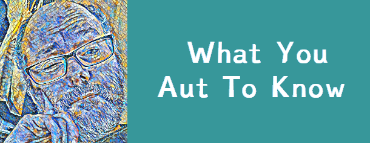

|

|
Diagnosis Resources
|
|
Think you might have autism?
Clinical Partners Oxfordshire Adult Autism Diagnostic Support Service:
OAADSS Website Government Help:
Neurodiversity in Business Websites: Check out the rest of the site! |